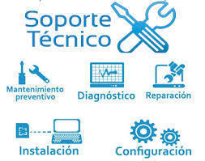

El soporte técnico es el conjunto de servicios, procedimientos y actividades destinados a ayudar a los usuarios a resolver problemas relacionados con equipos tecnológicos, programas, redes, sistemas informáticos y seguridad.
Su finalidad no es solamente reparar una computadora cuando deja de funcionar. También incluye diagnosticar problemas, configurar equipos, orientar a los usuarios, mantener sistemas, proteger información y recuperar el funcionamiento de los servicios tecnológicos.
El soporte técnico puede clasificarse de diferentes maneras. Algunos tipos describen cómo se proporciona la asistencia, mientras que otros describen el área tecnológica en la que trabaja el técnico.

TIPOS DE SOPORTE TECNICO
1.-Soporte presencial
¿Qué es?
El soporte técnico presencial es aquel en el que el técnico se encuentra físicamente en el lugar donde está el usuario, equipo o sistema que presenta el problema.
Es uno de los métodos más completos porque permite al técnico observar directamente el equipo, realizar pruebas, manipular componentes y comprobar físicamente las condiciones del dispositivo.
Puede utilizarse en hogares, colegios, universidades, oficinas, empresas, hospitales, tiendas y otros establecimientos.
¿Qué actividades realiza?
Un técnico presencial puede:
Revisar computadoras.
Diagnosticar fallas.
Instalar componentes.
Cambiar piezas dañadas.
Instalar sistemas operativos.
Instalar programas.
Configurar impresoras.
Configurar redes.
Revisar cables.
Limpiar equipos.
Realizar mantenimiento.
Configurar dispositivos.
Recuperar información.
Comprobar conexiones.
Realizar pruebas de funcionamiento.
¿Cuándo se utiliza?
Es especialmente útil cuando el problema:
Está relacionado con hardware.
Requiere manipular físicamente un dispositivo.
Necesita revisar cables o conexiones.
No puede solucionarse mediante Internet.
Requiere herramientas físicas.
Ejemplo
Una computadora de una institución educativa no enciende.
El técnico llega al lugar y realiza una revisión:
Comprueba el cable de alimentación.
Revisa la fuente de poder.
Comprueba la memoria RAM.
Revisa la placa madre.
Realiza pruebas de encendido.
Identifica el componente defectuoso.
Sustituye la pieza.
Comprueba que la computadora funcione correctamente.
Ventajas y Desventajas
VENTAJAS
DESVENTAJAS
Permite observar directamente el problema.
Permite reparar hardware.
Facilita el diagnóstico.
Permite realizar pruebas físicas.
Es útil para problemas complejos.
Requiere desplazamiento.
Puede ser más costoso.
La atención puede tardar si el técnico se encuentra lejos.
Necesidad de repuestos y herramientas
No siempre está disponible inmediatamente.
2.-Soporte remoto
¿Qué es?
El soporte técnico remoto es una modalidad en la que el técnico ayuda al usuario sin encontrarse físicamente en el mismo lugar. Para realizarlo normalmente se utilizan Internet, herramientas de comunicación y, cuando es necesario y autorizado por el usuario, programas de acceso remoto.
Este tipo de soporte permite diagnosticar y solucionar numerosos problemas relacionados con software, configuración, sistemas operativos y algunas dificultades de red sin necesidad de que el técnico se desplace.
¿Qué actividades realiza?
Diagnosticar problemas a distancia.
Configurar programas y aplicaciones.
Instalar actualizaciones.
Revisar configuraciones del sistema operativo.
Ayudar con configuraciones de red.
Guiar al usuario paso a paso.
Realizar comprobaciones mediante herramientas de diagnóstico.
Acceder al equipo de manera autorizada para realizar determinadas tareas.
¿Cuándo se utiliza?
Cuando el problema puede solucionarse mediante software.
Cuando el usuario se encuentra lejos del técnico.
Cuando se necesita una atención rápida.
Cuando no es necesario manipular físicamente el equipo.
Ejemplo
Un empleado no puede abrir un programa de trabajo. El técnico recibe el reporte, obtiene autorización para realizar la asistencia remota, revisa el error, comprueba la configuración del programa, aplica una solución y finalmente verifica que el usuario pueda trabajar correctamente.
Ventajas y Desventajas
VENTAJAS
DESVENTAJAS
No requiere desplazamiento.
Permite atender rápidamente.
Reduce costos de traslado.
Permite atender usuarios desde diferentes lugares.
Es muy útil para problemas de software.
No permite reparar físicamente los componentes.
Puede depender de Internet.
Requiere autorización para acceder al equipo.
Debe cuidarse la seguridad de las herramientas utilizadas.
Algunos problemas son difíciles de diagnosticar a distancia.
3.-Soporte telefónico
¿Qué es?
El soporte técnico telefónico es una modalidad en la que el usuario recibe ayuda mediante una llamada. El técnico escucha la descripción del problema, realiza preguntas para obtener información y proporciona instrucciones para intentar solucionarlo.
Es frecuente como primer punto de contacto porque permite realizar una evaluación inicial y determinar si el caso puede resolverse por teléfono o debe pasar a otro tipo de soporte.
¿Qué actividades realiza?
Escuchar y registrar el problema del usuario.
Realizar preguntas de diagnóstico.
Proporcionar instrucciones paso a paso.
Ayudar con configuraciones básicas.
Orientar sobre errores frecuentes.
Registrar el caso para darle seguimiento.
Escalar problemas complejos a personal especializado.
¿Cuándo se utiliza?
Para problemas sencillos.
Cuando el usuario necesita instrucciones inmediatas.
Como primer nivel de atención.
Cuando no es necesario observar directamente el equipo.
Ejemplo
Un usuario llama porque no puede conectarse a Internet. El técnico pregunta qué luces aparecen en el router, comprueba si otros dispositivos tienen conexión y proporciona instrucciones para revisar la conexión y reiniciar los dispositivos necesarios.
Ventajas y Desventajas
VENTAJAS
DESVENTAJAS
Es fácil de utilizar.
Permite atención rápida.
No requiere desplazamiento.
Es útil para problemas básicos.
El técnico no observa directamente el equipo.
Puede ser difícil explicar procedimientos complejos.
Depende de que el usuario siga correctamente las instrucciones.
No permite reparar hardware físicamente.
4.-Soporte en línea
¿Qué es?
El soporte técnico en línea es una modalidad de atención que utiliza Internet para comunicar al usuario con el personal de soporte. Puede realizarse mediante chats, formularios, plataformas de atención, mensajería y centros de ayuda.
Permite intercambiar información digital como textos, capturas de pantalla, documentos y otros archivos que pueden ayudar a identificar el problema.
¿Qué actividades realiza?
Responder preguntas técnicas.
Atender chats en tiempo real.
Recibir formularios de soporte.
Analizar capturas de pantalla y archivos enviados por el usuario.
Proporcionar manuales e instrucciones.
Crear y dar seguimiento a tickets.
¿Cuándo se utiliza?
Cuando el usuario tiene acceso a Internet.
Cuando se necesita enviar imágenes o documentos.
Para consultas y problemas técnicos comunes.
Para mantener un registro escrito de la atención.
Ejemplo
Un usuario entra al sitio web de soporte de una empresa y abre un chat. Explica que una aplicación presenta un mensaje de error y envía una captura de pantalla. El técnico analiza la información y proporciona los pasos necesarios para solucionar el problema.
Ventajas y Desventajas
VENTAJAS
DESVENTAJAS
Permite compartir archivos e imágenes.
Puede mantener un historial de la atención.
Puede estar disponible desde diferentes lugares.
Facilita el seguimiento de solicitudes.
Necesita conexión a Internet.
Algunos problemas son difíciles de explicar mediante texto.
La solución puede depender de la información proporcionada por el usuario.
Puede existir tiempo de espera.
5.-Soporte correctivo
¿Qué es?
El soporte técnico correctivo consiste en diagnosticar y solucionar una falla después de que esta ya se ha producido. Su finalidad es recuperar el funcionamiento normal del equipo, programa, red o sistema afectado.
Puede incluir reparación, reemplazo de componentes, reinstalación de software, corrección de configuraciones y recuperación del servicio.
¿Qué actividades realiza?
Detectar la causa de una falla.
Realizar pruebas de diagnóstico.
Reparar componentes dañados.
Reinstalar programas o sistemas.
Corregir configuraciones.
Restablecer servicios.
Verificar que la solución funcione.
Registrar la reparación realizada.
¿Cuándo se utiliza?
Cuando un equipo deja de funcionar correctamente.
Cuando una aplicación presenta una falla.
Cuando una red pierde conectividad.
Cuando un componente necesita ser reparado o reemplazado.
Ejemplo
Una computadora deja de reconocer su unidad de almacenamiento. El técnico realiza pruebas, revisa las conexiones y determina que el componente está dañado. Después de reemplazarlo, instala o recupera el sistema y comprueba que el equipo funcione nuevamente.
Ventajas y Desventajas
VENTAJAS
DESVENTAJAS
Permite recuperar equipos y sistemas.
Soluciona problemas existentes.
Puede restablecer rápidamente el servicio.
Permite identificar la causa de una falla.
El problema ya ocurrió.
Puede causar interrupciones de trabajo.
Algunas reparaciones pueden ser costosas.
Una falla puede provocar pérdida de información.
6.-Soporte preventivo
¿Qué es?
El soporte técnico preventivo consiste en realizar revisiones, mantenimientos y acciones planificadas antes de que ocurra una falla. Su objetivo principal es prevenir problemas, reducir el riesgo de averías y mantener los equipos, programas, redes y sistemas funcionando correctamente.
A diferencia del soporte correctivo, que actúa después de que aparece una falla, el soporte preventivo busca detectar señales de posibles problemas con anticipación y aplicar medidas para evitarlos.
¿Qué actividades realiza?
Un técnico preventivo puede:
Limpiar físicamente los equipos.
Revisar cables y conexiones.
Comprobar temperaturas y ventilación.
Revisar el estado de discos y otros componentes.
Actualizar sistemas operativos y programas.
Comprobar antivirus y medidas de seguridad.
Realizar copias de seguridad.
Revisar el funcionamiento de las redes.
Detectar componentes o configuraciones que podrían generar problemas.
Registrar los mantenimientos realizados.
¿Cuándo se utiliza?
Es especialmente útil cuando:
Se quiere evitar fallas inesperadas.
Los equipos son utilizados constantemente.
Una organización depende de sus sistemas tecnológicos.
Se necesita prolongar la vida útil de los equipos.
Se desea reducir interrupciones y costos de reparación.
Ejemplo
Una institución realiza una revisión periódica de sus computadoras. El técnico limpia los equipos, comprueba los ventiladores, revisa los discos, verifica las actualizaciones, comprueba las conexiones y realiza copias de seguridad. De esta manera puede detectar problemas antes de que provoquen una falla durante las actividades de los usuarios.
Ventajas y Desventajas
VENTAJAS
DESVENTAJAS
Ayuda a prevenir fallas.
Puede prolongar la vida útil de los equipos.
Reduce el riesgo de interrupciones.
Permite detectar problemas con anticipación.
Puede reducir costos de reparaciones graves.
Requiere tiempo de planificación.
Puede generar costos de mantenimiento.
No elimina completamente la posibilidad de fallas.
Puede requerir detener temporalmente algunos equipos.
Necesita realizarse de manera periódica.
7.-Soporte de hardware
¿Qué es?
El soporte técnico de hardware se especializa en los componentes físicos de computadoras, impresoras y otros dispositivos tecnológicos. El técnico inspecciona, instala, mantiene, reemplaza y diagnostica componentes para conseguir un funcionamiento adecuado.
El hardware incluye las partes que pueden observarse y manipularse físicamente, como la memoria RAM, el almacenamiento, la placa madre, la fuente de alimentación y los periféricos.
¿Qué actividades realiza?
Instalar memoria RAM.
Instalar o reemplazar discos HDD y SSD.
Cambiar fuentes de alimentación.
Revisar placas madre.
Revisar ventiladores y sistemas de refrigeración.
Limpiar componentes.
Revisar periféricos.
Realizar pruebas físicas y eléctricas apropiadas.
¿Cuándo se utiliza?
Cuando una pieza presenta una falla.
Cuando se necesita actualizar un equipo.
Cuando existe sobrecalentamiento.
Cuando un periférico no funciona correctamente.
Ejemplo
Una computadora se apaga constantemente por problemas de temperatura. El técnico revisa los ventiladores, elimina el polvo acumulado, comprueba la refrigeración y reemplaza el componente defectuoso si es necesario.
Ventajas y Desventajas
VENTAJAS
DESVENTAJAS
Permite reparar físicamente los equipos.
Puede mejorar el rendimiento mediante actualizaciones.
Ayuda a prolongar la vida útil de los dispositivos.
Permite identificar componentes defectuosos.
Puede requerir repuestos.
Algunas reparaciones necesitan herramientas.
Una manipulación incorrecta puede dañar componentes.
Algunas piezas pueden ser costosas.
8.-Soporte de software
¿Qué es?
El soporte técnico de software se ocupa de problemas relacionados con programas, aplicaciones, controladores y sistemas operativos. Su objetivo es conseguir que el software funcione correctamente y que esté configurado de acuerdo con las necesidades del usuario.
Este soporte puede solucionar errores de instalación, problemas de compatibilidad, configuraciones incorrectas, fallas de actualización y otros inconvenientes relacionados con el funcionamiento lógico del equipo.
¿Qué actividades realiza?
Instalar programas.
Desinstalar aplicaciones.
Actualizar software.
Configurar sistemas operativos.
Instalar controladores.
Solucionar errores de aplicaciones.
Comprobar compatibilidad entre programas.
Reinstalar software cuando sea necesario.
¿Cuándo se utiliza?
Cuando un programa no abre.
Cuando una aplicación presenta errores.
Cuando un sistema operativo necesita configuración.
Cuando un controlador no funciona correctamente.
Ejemplo
Una aplicación se cierra cada vez que el usuario intenta abrirla. El técnico revisa el mensaje de error, comprueba la versión instalada, revisa actualizaciones y, si es necesario, repara o reinstala la aplicación. Finalmente comprueba que funcione correctamente.
Ventajas y Desventajas
VENTAJAS
DESVENTAJAS
Muchos problemas pueden solucionarse remotamente.
No siempre requiere reemplazar hardware.
Puede mejorar el funcionamiento de las aplicaciones.
Permite mantener los programas actualizados.
Algunos errores pueden ser difíciles de diagnosticar.
Una configuración incorrecta puede generar otros problemas.
Puede ser necesario reinstalar programas.
Algunos programas requieren conocimientos especializados.
9.-Soporte de redes
¿Qué es?
El soporte técnico de redes se encarga de instalar, configurar, mantener y solucionar problemas relacionados con las redes informáticas. Las redes permiten que computadoras, teléfonos, impresoras, servidores y otros dispositivos se comuniquen y compartan recursos.
El técnico puede trabajar con conexiones cableadas e inalámbricas y revisar equipos como routers, switches y puntos de acceso.
¿Qué actividades realiza?
Configurar routers.
Configurar switches.
Configurar redes Wi-Fi.
Revisar cables de red.
Configurar direcciones IP.
Comprobar conectividad.
Diagnosticar problemas de Internet.
Revisar dispositivos de red.
¿Cuándo se utiliza?
Cuando un equipo no tiene conexión.
Cuando una red Wi-Fi funciona lentamente.
Cuando existen problemas de direccionamiento.
Cuando una empresa necesita instalar o ampliar una red.
Ejemplo
En una institución varias computadoras pierden el acceso a Internet. El técnico revisa las conexiones, el switch, el router, la configuración de red y la comunicación entre los dispositivos hasta localizar la causa de la interrupción.
Ventajas y Desventajas
VENTAJAS
DESVENTAJAS
Mantiene la comunicación entre dispositivos.
Ayuda a mantener disponible la conexión.
Permite diagnosticar problemas de conectividad.
Facilita la administración de redes.
Las redes pueden tener configuraciones complejas.
Una falla puede afectar a muchos usuarios.
Algunos problemas requieren herramientas especializadas.
Los dispositivos de red pueden requerir inversión.
10.-Soporte de sistemas
¿Qué es?
El soporte técnico de sistemas se encarga de mantener, administrar y solucionar problemas relacionados con los sistemas informáticos utilizados por una organización. Es un área amplia porque puede involucrar sistemas operativos, servidores, aplicaciones, usuarios, servicios y otros recursos tecnológicos.
Su finalidad es mantener disponibles y funcionando correctamente los sistemas necesarios para las actividades de una institución o empresa.
¿Qué actividades realiza?
Administrar usuarios.
Gestionar permisos.
Configurar servidores.
Actualizar sistemas.
Supervisar servicios informáticos.
Realizar copias de seguridad.
Administrar aplicaciones.
Investigar errores del sistema.
¿Cuándo se utiliza?
Cuando una organización utiliza sistemas informáticos para sus actividades.
Cuando se necesita administrar usuarios y permisos.
Cuando existen problemas con servidores o servicios.
Cuando es necesario mantener sistemas disponibles.
Ejemplo
Una empresa utiliza un sistema para registrar sus ventas y los empleados dejan de poder iniciar sesión. El técnico revisa el servidor, la conexión, las cuentas de usuario, los permisos y los servicios necesarios hasta encontrar y solucionar la causa.
Ventajas y Desventajas
VENTAJAS
DESVENTAJAS
Mantiene funcionando los sistemas de una organización.
Permite administrar usuarios y recursos.
Ayuda a prevenir interrupciones.
Facilita el control de la infraestructura informática.
Requiere conocimientos técnicos amplios.
Una falla puede afectar a muchos usuarios.
Los sistemas empresariales pueden ser complejos.
Puede requerir monitoreo constante.
11.-Soporte de seguridad informática
¿Qué es?
El soporte técnico de seguridad informática tiene como objetivo proteger equipos, sistemas, redes y datos frente a amenazas digitales, accesos no autorizados y otros riesgos. Busca mantener la información protegida y los sistemas funcionando de manera segura.
La seguridad informática requiere medidas técnicas y buenas prácticas de los usuarios, ya que muchos incidentes pueden producirse por configuraciones incorrectas, software malicioso o engaños dirigidos a las personas.
¿Qué actividades realiza?
Configurar antivirus.
Configurar firewalls.
Controlar accesos.
Gestionar contraseñas y cuentas.
Mantener sistemas actualizados.
Realizar copias de seguridad.
Detectar software malicioso.
Revisar eventos de seguridad.
Proteger redes y dispositivos.
Orientar a los usuarios sobre prácticas seguras.
¿Cuándo se utiliza?
Cuando se necesita proteger información.
Cuando se detectan actividades sospechosas.
Cuando se requiere controlar el acceso a sistemas.
Cuando una organización necesita fortalecer sus medidas de seguridad.
Ejemplo
Una empresa recibe varios mensajes sospechosos que contienen enlaces desconocidos. El área de soporte de seguridad analiza los mensajes, identifica el riesgo, bloquea los elementos peligrosos, revisa los equipos y orienta a los usuarios para evitar incidentes similares.
Ventajas y Desventajas
VENTAJAS
DESVENTAJAS
Protege información y sistemas.
Reduce riesgos de seguridad.
Ayuda a detectar amenazas.
Mejora el control de accesos.
Ayuda a mantener copias de seguridad.
Requiere actualización constante.
Las amenazas pueden cambiar rápidamente.
Puede requerir herramientas especializadas.
Los usuarios también deben seguir buenas prácticas.
12.-Soporte especializado
¿Qué es?
El soporte técnico especializado está destinado a problemas que requieren conocimientos avanzados y específicos. Es realizado por técnicos o profesionales que poseen experiencia en determinadas áreas de la tecnología.
Se utiliza normalmente cuando un problema es demasiado complejo para una atención básica o cuando se necesita conocimiento profundo sobre un sistema, una red, un servidor, una base de datos, seguridad informática u otra tecnología.
¿Qué actividades realiza?
Resolver problemas técnicos complejos.
Analizar servidores y sistemas avanzados.
Diagnosticar problemas especializados de redes.
Analizar incidentes de seguridad.
Administrar bases de datos.
Trabajar con sistemas empresariales.
Realizar recuperación de información cuando corresponda.
Diseñar o aplicar soluciones específicas.
Áreas de especialización
Ciberseguridad.
Redes avanzadas.
Servidores.
Bases de datos.
Programación.
Sistemas empresariales.
Computación en la nube.
Administración de sistemas.
¿Cuándo se utiliza?
Cuando el soporte básico no puede solucionar el problema.
Cuando existe una falla compleja.
Cuando se necesita conocimiento técnico avanzado.
Cuando una infraestructura tecnológica requiere una solución específica.
Ejemplo
Una empresa tiene un servidor que presenta errores y afecta las actividades de muchos usuarios. El soporte básico no logra encontrar la causa, por lo que el caso se entrega a un especialista. El profesional analiza los registros, servicios, almacenamiento, red y configuración del servidor hasta encontrar una solución.
Ventajas y Desventajas
VENTAJAS
DESVENTAJAS
Permite solucionar problemas complejos.
Cuenta con conocimientos avanzados.
Permite trabajar con tecnologías específicas.
Puede proporcionar soluciones adaptadas a cada caso.
Puede tener un costo mayor.
Requiere profesionales con conocimientos específicos.
Algunos diagnósticos pueden tomar bastante tiempo.